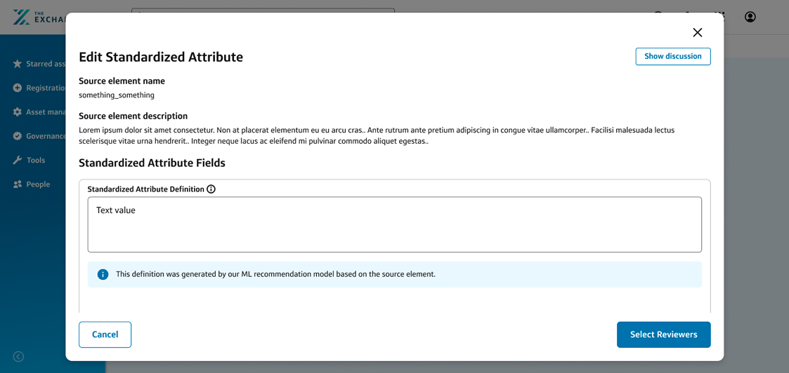
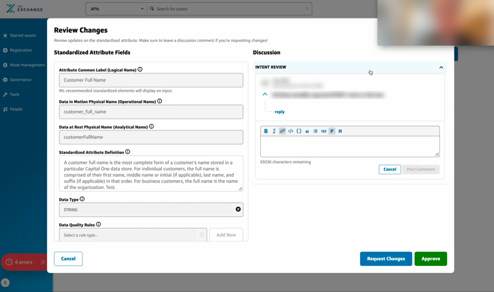

Workbench

Overview
Workbench is an internal tool for Capital One's Enterprise Data organization. It gives data modelers a single place to model data products by registering, defining, and governing the standardized data attributes they're built from — the shared, reusable definitions (names, data types, quality rules, privacy classifications, and calculation logic) that let data be discovered, trusted, and reused across teams. Before Workbench, data products were modeled in Google Sheets.
No designer was ever staffed to the project, so I picked it up alongside my assigned work. What started as a single modal grew into redesigning the tool around the Exchange design system's components and patterns, which got it through the innersourcing review it needed to launch. Within about six months, 35 data products had onboarded.
Jump to final design ↓Problem
A new governance tool would replace spreadsheets for modeling data products. It just had no design support.
Spreadsheets had no versioning, audit trail, validation, or visibility for the governance reviewers who signed off on what got published, and modeling a data product in them required scanning rows of attributes across many columns of metadata, which led to fatigue and cognitive overload. Collaboration was also difficult, since comments got lost in the sheet or glossed over. A small platform team in Enterprise Data set out to build a real tool to replace them — but it was conceived and built entirely by engineering, with a product partner driving scope.
When I learned about Workbench, I raised it with my manager, and we agreed it was an experience risk: a governance-facing tool, built without UX involvement, heading toward a real launch. There was no plan to staff design, and I already had a working relationship with the product partner.
The call I made
I picked the project up side of desk — informal design work layered on top of my assigned projects — because the alternative was a governance tool shipping with no design input at all.
Process
One modal grew into a full redesign once a failed review exposed serious experience gaps.
The scope didn't start as "redesign the platform." It started as a single, well-defined ask, and grew because the problems underneath it didn't stop at one screen.
One modal. The product partner's first ask was narrow and concrete: design the modal analysts use to model a new standardized attribute. It was the right entry point for side-of-desk work: scoped, bounded, and clearly valuable.
The scope kept growing. Designing that modal surfaced the same problems everywhere around it — inconsistent patterns in the attribute tables, the registration flow, and the hierarchy views. Asks for "just this screen" turned into requests for the whole modeling workspace.
Failing the innersourcing review forced the real fix. To be hosted on the Exchange, Capital One's internal platform for data products, a tool has to clear an innersourcing review. Workbench's original build failed it: the developers had built on the Exchange design system, but used its components incorrectly or in unexpected ways. That failure turned "help with a modal" into a full redesign.
Redesigning with the Exchange design system. I redesigned the modeling workspace, standardized-attribute tables, registration wizard, and delete/archive flows to use Exchange components the way they were intended — consistent patterns, accessible interactions, and a structure that could pass the review.
Design review
Before designing, I audited the build and prioritized fixes by effort, from quick type changes to a new structure.
Before jumping into screens, I put together a design review of the existing build for the product partner and engineering team. It walked through the original UI against Gravity's foundations and the Exchange design system, and I tagged every recommendation by level of effort so the team could ship quick wins while planning the bigger structural changes.
Landing page

The original landing page: heavy bold type, and every card had a full-width primary "View" button competing with "Create New Modeling Set."
- Typography: Low effort The build leaned heavily on bold. Following Gravity's foundations, I recommended using only regular and semibold for both text and numbers, with consistent font sizes across inputs and lookups.
- One primary action: Low effort "Create new modeling set" became the only primary CTA, moved to the top right to match the Gravity standard, with "View" demoted to a narrower secondary button.
- A table instead of cards: Low effort I recommended listing modeling sets in a table rather than a card grid, matching how other assets are listed on the Exchange and making it easier to scan and compare sets as the list grows.
Registration

The original registration: everything stacked in a single scrolling modal.

My sketch: full-page registration with a milestone panel.
- Template registration: High effort Registration had too many steps and actions for a modal. I recommended moving it to full pages that follow the Exchange's standard registration template, with a milestone panel so users know how many steps are left and helper text explaining the purpose of each field.
Modeling set page

My sketch of the recommended side nav: Manage, Model, and Metrics.
- Breadcrumbs: Low effort Each page had only a back button. Breadcrumbs show users where they are in the hierarchy and let them jump back more than one level.
- Clearer labels: Low effort Since "Modeling Set Details" held progress stats, not details, I recommended calling it "Metrics," with stats segmented by standardized attribute and data entity and a small visualization of review times.
- Information hierarchy: High effort Modeling is the main job on this page, yet "View TTL" and "Edit Modeling Set" sat at the top level, and metrics hid in a dropdown above the tabs. I recommended the Exchange design system's asset layout instead: a standard side nav grouped into Manage (details and team), Model (attributes, entities, and reviews), and Metrics.
Modeling and review

The original attribute editor: source element info scrolled away as soon as modelers started filling in fields.
- Sticky source element: Medium effort Moving the source element name and description into a sticky header, so modelers can see what they're modeling while filling in attribute fields.

The recommended banner: labeling definitions generated by the ML recommendation model.
- AI transparency: Low effort Workbench pre-filled definitions with an ML recommendation model, but nothing told modelers where they came from. I recommended an informational banner under the definition field, so modelers know to review generated definitions rather than accept them as written.

The original review flow: attribute fields and a discussion thread squeezed side by side in a modal.
- Full-page modeling and review: High effort Editing and reviewing an attribute packed fields, a discussion thread, and approval actions into a modal. I recommended making modeling attributes and entities and reviewing changes full-page actions within the modeling set, rather than overlays.
Final design
The redesign covers registering a modeling set, managing its attributes, and guarding against destructive actions.
The core object in Workbench is a data product modeling set — a registered group of standardized attributes owned by a team. The redesign covers the end-to-end experience around it: registering a new set, populating it with standardized attributes, and building in guardrails so destructive actions can't happen by accident.
Registering a modeling set
Creating a new modeling set is a guided, four-step wizard — basic info, ownership, and team permissions — with a persistent side panel tracking progress and a help link out to the team's Slack channel for questions along the way.
Basic info — name and describe the modeling set.
Ownership — assign a platform owner and any delegates.
Team — choose modelers who can edit and reviewers who can approve.
Review — a read-only summary of everything before submitting.
Managing standardized attributes
Each modeling set's detail page is a dense data table of its standardized attributes, with search, pagination, and a side navigation for jumping between sections of the set. Adding a new one opens a detailed form covering everything governance needs to know about it — an attribute's type, quality rules, privacy classification, and hierarchy. Workbench also pre-fills attribute definitions using an ML recommendation model, so I added an informational banner that labels generated definitions and prompts modelers to review them rather than accept them blindly.
More on managing attributes
Standardized attributes list with search, row-level actions, and bulk selection.
Source elements, naming (logical, operational, and analytical), data type, data quality rules, human/PII data flags, privacy classification, attribute hierarchy, and calculation logic with a lightweight rich-text editor.
Defining how a new attribute relates to a parent standardized attribute, so governance and lineage stay intact as the set grows.
Handling attributes that roll up from more than one source system — a state the original build hadn't accounted for.
An informational banner under the definition field: "This definition was generated by our ML recommendation model based on the source element."
Guardrails
Deleting a standardized attribute can affect every data product that references it, so I designed confirmation flows that adapt to the situation — individual vs. bulk, whether the attribute is still actively modeled elsewhere, and archiving a full modeling set.
More on guardrails
Distinct messaging for individual vs. multiple deletions, for attributes with no source elements modeled versus several, and for archiving a whole set.
Design system
Built entirely on Exchange design system components — form fields, badges, checkboxes, and buttons — so the focus stayed on the data governance workflow itself rather than the UI kit.
Results
Workbench passed review, launched, and became the team's biggest win of the year.
The rebuilt experience passed the innersourcing review, and Workbench launched on the Exchange. A pilot with two teams proved out the new flow, and from there, adoption moved fast.
By the time that growth was visible, I'd rotated onto my next assignment and handed the work off to a newly staffed designer three levels above me. The side-of-desk work had set the foundation for a project that now had formal design support, and by the product partner's account, it became the team's largest success of the year.
Takeaways
Naming a risk isn't enough; someone has to own it.
A tool built with zero staffed design time still had to clear a bar that only design work could get it past. Naming a risk is the first step; someone still has to own it. Next time, I'd push earlier for that conversation to end in a resourcing decision, so the work doesn't depend on whoever has the capacity to absorb it informally.
Had I not rotated off before Workbench shipped, I would have tested it with users directly rather than handing off a design that had only been validated informally.
Next case study
Back to all work →